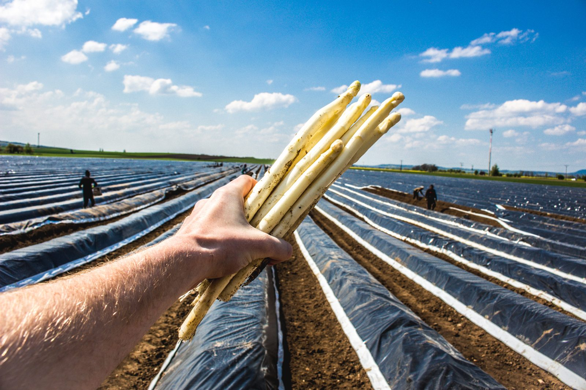

{{band.title}}{{band.sub}}
Ručně sbíraný bílý a zelený chřest z největší české chřestové farmy. V sezóně ho prodáváme přímo u pole, každý květen pořádáme Chřestové a křenové slavnosti.
Na polích pod Mělníkem pěstujeme chřest i křen – plodiny, které k české kuchyni odjakživa patří a které dnes většinou putují z dovozu. Vyberte si, kam se chcete podívat.
Trvanlivé dobroty z našeho chřestu a křenu, které vydrží ve spíži celý rok.